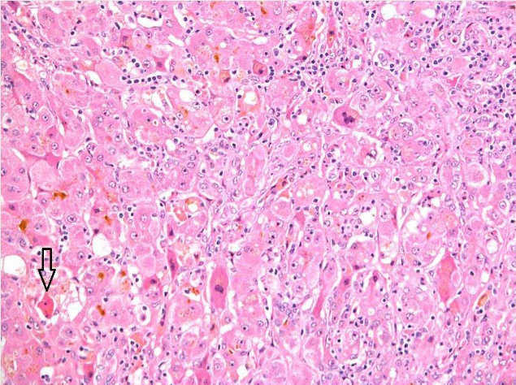
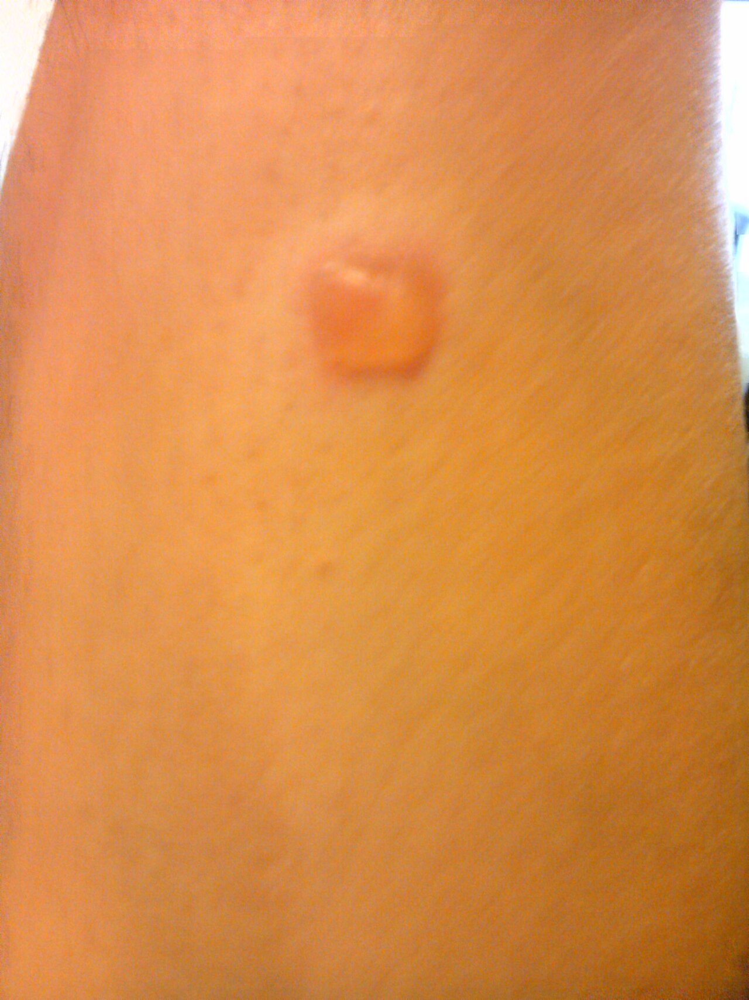
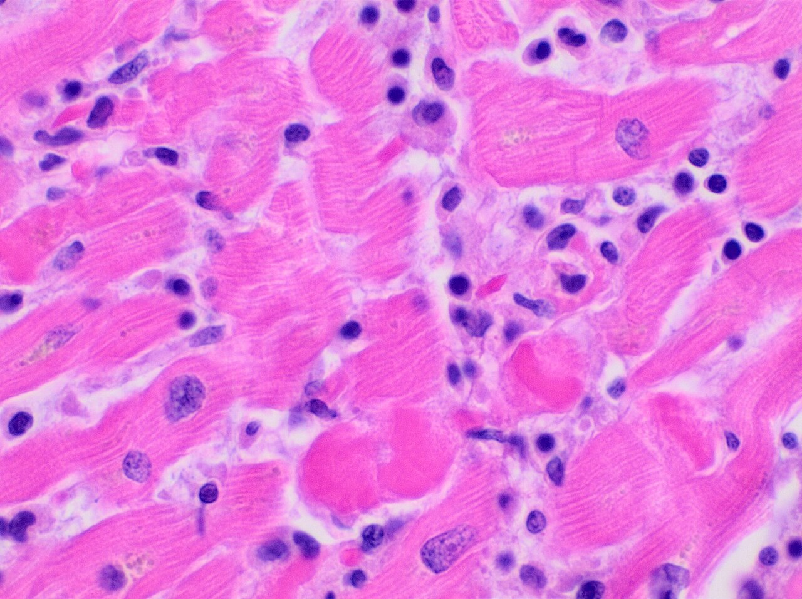
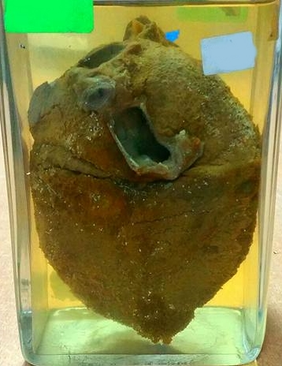
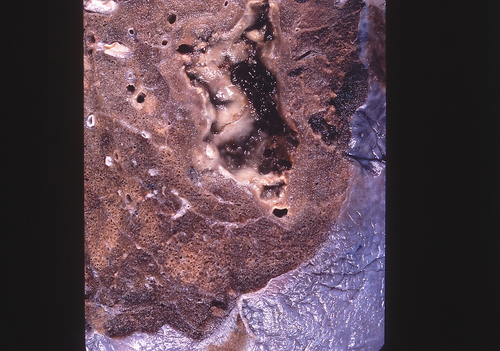
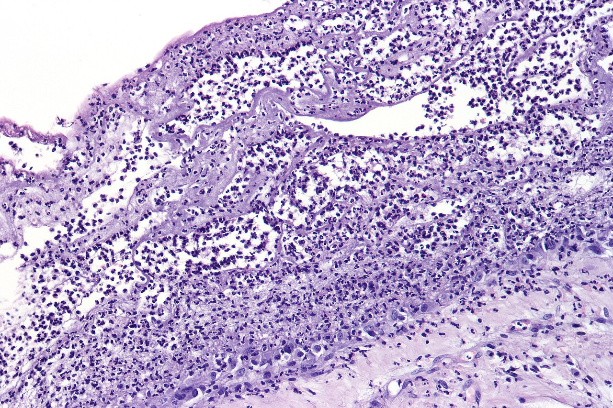
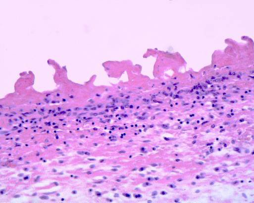
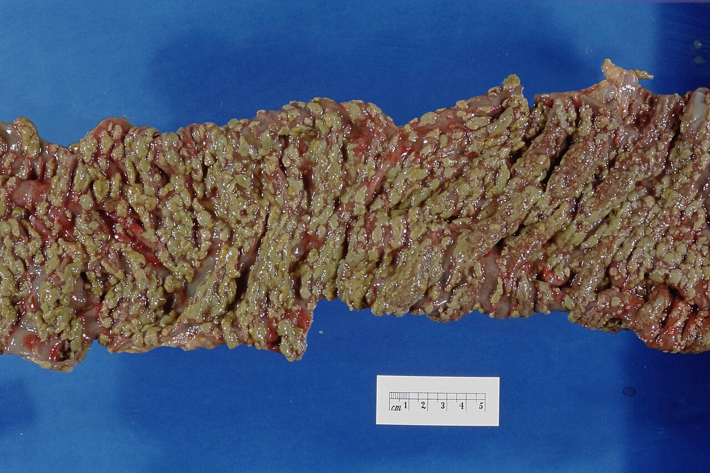
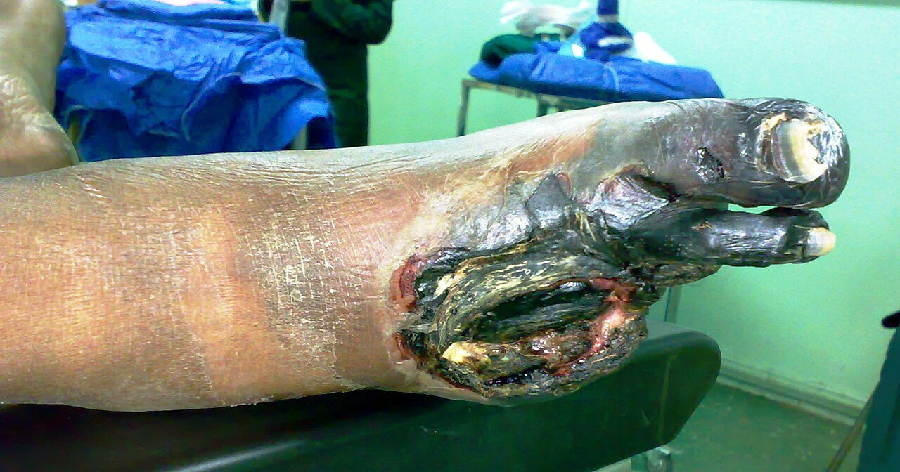

Typy zápalu – alteratívny a exsudatívny zápal
Všetky zápaly prechádzajú tými istými krokmi, no v každom prevládne iný – zánik buniek, tekutina a bunky z ciev, alebo nové bunky v ložisku. Kapitola rozoberá alteratívny zápal a podoby exsudatívneho podľa toho, čo prešlo stenou cievy a ktoré bunky prišli (serózny, lymfocytárny, hnisavý, fibrinózny, hemoragický), a gangrenózny zápal; proliferatívny zápal má vlastné kapitoly 5 a 6.
Predpoklady: → 3.3 Cievna fáza – exsudácia · → 3.4 Bunková fáza – leukocyty v ložisku · → 3.5.3 Hranica reverzibility: kedy sa zápal zahojí bez jazvy · → 1.6 Druhy nekrózy
Odborná kontrola: zatiaľ neprebehla — fakty sú overené len podľa zdrojov uvedených na konci kapitoly · Nahlásiť chybu
4.1Ako sa zápal delí a pomenúva
Zápal má štyri deje – alteráciu, exsudáciu, infiltráciu a proliferáciu (→ 3.1 Zápal – definícia, spúšťače a Celsove znaky). Prebehnú pri každom zápale, no patológ na reze vidí hlavne ten, ktorý prevládol. Delenie zápalov preto stojí na jedinej otázke – čo v ložisku prevláda – a pri exsudatívnom zápale ju spresňujú ďalšie tri.
4.1.1Tri typy podľa toho, čo prevláda
Podľa prevládajúceho deja sú tri typy zápalu:
| Typ | Čo prevláda | Podoby | Kde |
|---|---|---|---|
| Alteratívny | zánik buniek parenchýmu | nekrózy, riedky infiltrát | → 4.2 Alteratívny zápal |
| Exsudatívny | tekutina a leukocyty z ciev | serózny, lymfocytárny, hnisavý, fibrinózny, hemoragický; gangrenózny | → 4.3 Serózny zápal až → 4.8 Gangrenózny (hnilobný, putrídny) zápal |
| Proliferatívny | bunky deliace sa v ložisku | nešpecifický (granulačné tkanivo, fibróza), granulomatózny | kapitoly 5 a 6 |
V proliferatívnom (produktívnom) zápale prevládajú bunky, ktoré sa delia priamo v ložisku – makrofágy, endotel nových kapilár a fibroblasty. Proliferácia sa rozbieha pri každom zápale okolo 2.–3. dňa, keď ustúpia neutrofily; prevládne pri hojení a v chronickom zápale, ktorého príčina stále pôsobí (→ 3.5.1 Akútny, subakútny a chronický zápal). Neutrofily sa v ložisku nedelia, len prichádzajú krvou – preto ani masívny hnisavý infiltrát nie je proliferatívny.
pretrvávajúci podnet → makrofágy (TGF-β, PDGF, VEGF) → pučiace kapiláry a fibroblasty = granulačné tkanivo → kolagén → jazva, fibróza orgánu
Podobu proliferatívneho zápalu určí, či makrofág podnet dokáže stráviť:
- nešpecifický – dokáže, alebo sa podnet opakuje → granulačné tkanivo a fibróza bez osobitného útvaru (→ 5.3 Granulačné tkanivo – motor reparácie, → 5.9 Chronický zápal – keď poškodenie a oprava bežia naraz),
- granulomatózny – nedokáže → makrofágy sa zmenia na epiteloidné bunky a zoskupia do uzlíka, granulómu (→ 6.1 Granulóm – keď makrofág nevie stráviť, čo pohltil).
4.1.2Exsudatívne zápaly – tri otázky
Typ exsudatívneho zápalu určujú odpovede na tri otázky:
1. Čo prešlo stenou ciev? Závisí od toho, ako ťažko je cieva poškodená (→ 3.3 Cievna fáza – exsudácia):
- slabý podnet → otvoria sa len drobné medzery medzi endotelovými bunkami → voda a albumín → serózny,
- ťažšie poškodenie → prejde aj fibrinogén (≈ 340 kDa, asi päťkrát väčší než albumín) a v tkanive sa zrazí → fibrinózny,
- stena sa rozpadne → unikajú aj erytrocyty → hemoragický.
2. Ktoré bunky prišli? Závisí od signálu (→ 3.4.2 Ktoré bunky prídu a kedy):
- baktérie a mŕtve tkanivo privolajú neutrofily → hnisavý,
- vírusy a vlastné či cudzie antigény privolajú lymfocyty → lymfocytárny.
3. Kde leží?
- povrchový – na plochách, odkiaľ exsudát odtečie (koža, sliznice, serózne blany, mozgové pleny, synovia); odplaví sa alebo vykašle,
- hlboký (intersticiálny) – vo väzivovej stróme orgánu; exsudát ostáva, tlačí na cievy a bunky a musia ho odstrániť fagocyty.
Gangrenózny (hnilobný) zápal stojí mimo týchto osí – vzniká, keď do už odumretého tkaniva vniknú hnilobné baktérie. Odpovede sa môžu kombinovať: exsudát býva serofibrinózny, fibrinózno-hnisavý alebo serohemoragický.
4.1.3Ako sa zápal pomenúva
Názov zápalu nesie tri údaje, ktoré zodpovedajú trom otázkam lekára – kde, ako dlho a čo prevláda:
Ako sa skladá názov zápalu, napr. chronická hnisavá cholecystitída: kde? – koncovka -itída (žlčník); ako dlho? – akútny či chronický (→ 3.5.1 Akútny, subakútny a chronický zápal); čo prevláda? – typ z tabuľky.
4.2Alteratívny zápal
Každý zápal začína poškodením tkaniva, ktoré mikroskop zachytí ako alteráciu – regresívnu zmenu buniek od vratnej dystrofie (→ 2.2 Dystrofie – hlavná myšlienka) až po nekrózu. Obyčajne ju prekryje exsudát a infiltrát, ktoré prídu hneď po nej. Ak však poškodenie parenchýmu prevládne nad cievnou a bunkovou odpoveďou – mŕtvych buniek je veľa a zápalových málo –, ide o alteratívny (parenchýmový) zápal.
Rozhoduje, či agens ničí bunky priamo a rýchlo, skôr než sa stihne rozvinúť cievna a bunková odpoveď:
- Toxín, ktorý zasiahne bunku na diaľku. Toxín Corynebacterium diphtheriae sa z hltana dostane krvou do kardiomyocytov a zablokuje elongačný faktor 2 – bielkovinu, ktorá po pripojení každej aminokyseliny posunie ribozóm po mRNA o jeden kodón ďalej. Ribozóm bez nej ostane stáť → zastaví sa proteosyntéza → bunky tukovo degenerujú a ložiskovo odumierajú. Baktéria v srdci nie je, takže nepriťahuje neutrofily – difterická myokarditída má nekrózy a riedky infiltrát.
- Vírus, ktorý bunku zabije zvnútra (cytopatický účinok). Vírus obsadí proteosyntézu bunky a pri množení ju rozruší; bunky zanikajú nekrózou alebo apoptózou skôr, než dozrie špecifická imunita. Poliovírus takto zabíja motoneuróny predných rohov miechy (poliomyelitída); podobne zanikajú neuróny pri vírusových encefalitídach a hepatocyty pri vírusových hepatitídach (tam škodia aj cytotoxické T lymfocyty).
- MA: orgán často len opuchnutý a bledší; pri masívnej nekróze pečene zmenšená, mäkká, žltá až červená pečeň.
- MI: dystrofické a nekrotické bunky parenchýmu (eozinofilná cytoplazma, pyknóza) a len riedky infiltrát. V pečeni pri akútnej vírusovej hepatitíde rozvrátená stavba lalôčika, balónovito napuchnuté hepatocyty a acidofilné (Councilmanove) telieska – apoptotické hepatocyty (→ 1.4.1 Kedy sa s apoptózou stretneš); v mozgu neuróny obkolesené mikrogliou, ktorá ich pohlcuje (neuronofágia).

Rozsah alterácie sa dá často zmerať skôr v krvi než na reze: enzýmy, ktoré uniknú z poškodených buniek – ALT a AST pri hepatitíde (pri akútnej vírusovej hepatitíde často > 10× nad hornú hranicu normy), troponín pri myokarditíde (→ 1.5.2 Histologické znaky nekrotickej bunky). Pôvodcu potvrdí sérológia, PCR alebo imunohistochémia.
Alteratívne zápaly sú nebezpečné tam, kde sa strata buniek nedá nahradiť:
- difterická myokarditída → poruchy rytmu a zlyhanie srdca, obvykle v 2. týždni choroby,
- poliomyelitída → trvalé ochrnutie,
- pečeň naopak regeneruje – zahojí sa ad integrum, ak prežila retikulínová kostra lalôčikov (→ 3.5.3 Hranica reverzibility: kedy sa zápal zahojí bez jazvy).
Najúčinnejšou „liečbou“ je očkovanie – ruší príčinu skôr, než zničí bunky.
4.3Serózny zápal
Serózny exsudát je riedka, takmer číra tekutina s malým množstvom bielkovín a buniek. Vzniká pri podnetoch, ktoré cievy len rozšíria a otvoria v ich stene drobné medzery – teplo, trenie, začínajúca vírusová infekcia, alergická reakcia. Často je len prvou fázou iného zápalu. Od nezápalového edému (transsudátu) sa na pohľad nelíši, odlíši ho až vyšší obsah bielkovín (→ 3.3 Cievna fáza – exsudácia).
Čo z neho vznikne, určuje priestor, v ktorom sa tekutina nahromadí:
| Kde sa tekutina hromadí | Čo vznikne | Príklad | Čo z toho plynie |
|---|---|---|---|
| medzi keratinocytmi epidermis | pľuzgier – vezikula (< 1 cm) alebo bula | otlak z trenia, herpes simplex (opar) | bazálna membrána ostala celá → epitel ju prerastie a koža sa zahojí bez jazvy |
| na sliznici, ktorá tvorí hlien | katar – tekutina zmiešaná s hlienom vyteká | vírusová nádcha, alergická rinitída | epitel sa obnoví z bazálnych buniek za niekoľko dní |
| v telovej dutine (pleura, perikard, peritoneum, mozgové pleny) | výpotok; blana stráca lesk | serózna pleuritída v susedstve pneumónie | tekutinu odvedie lymfa; ak sa pridá fibrín, hrozia zrasty |
| v interstíciu (dermis, podslizničné väzivo) | opuch bez voľnej tekutiny | žihľavka (pupeň), angioedém | nebezpečné tam, kde opuch zúži dýchaciu cestu |

Ak podnet zmizne, lymfa tekutinu odvedie za niekoľko dní. Ak sa na oslabený epitel uchytia baktérie, privolajú neutrofily a exsudát zhustne na hnisavý (z vírusovej nádchy bakteriálna sinusitída). Ak dráždenie trvá mesiace, sliznica sa prestavuje – buď stráca žľazy a tenčie (atrofia), alebo zhrubne a vytvorí zápalové polypy (hyperplázia; typicky nos a prinosové dutiny pri alergii).
Aj najmiernejší zápal môže ohroziť život v úzkej rúre: odpor prúdenia rastie so štvrtou mocninou polomeru (Poiseuille), takže opuch, ktorý polomer dýchacej cesty zmenší na polovicu, zvýši odpor 16-násobne. Preto je angioedém hrtana či podhlasivkový opuch pri vírusovej laryngotracheitíde (krupe) u malého dieťaťa akútny stav. Či za angioedémom stojí histamín alebo bradykinín, rozhoduje o liečbe (→ 3.2.2 Mediátory z plazmy – štyri prepojené kaskády).
4.4Lymfocytárny (nehnisavý) zápal
Pri lymfocytárnom zápale tvoria infiltrát namiesto neutrofilov lymfocyty, plazmocyty a makrofágy; exsudát je riedky ako pri seróznom zápale. Lymfocyty prichádzajú tam, kde treba nájsť nepriateľa ukrytého vo vnútri vlastných buniek – vírus v napadnutej bunke, vlastný antigén pri autoimunite, cudzí antigén na transplantovanom orgáne. Cielený klon T lymfocytov sa musí najprv namnožiť, a preto sa infiltrát rozvinie až po niekoľkých dňoch.
Kde ho nájdeš, určuje cieľ lymfocytov:
- Proti vírusu – cytotoxické T lymfocyty zabijú bunky, ktoré na povrchu nesú vírusové peptidy. Lymfocytárna myokarditída (enterovírusy, napr. coxsackie B), vírusová hepatitída, intersticiálna pneumónia, vírusová meningitída.
- Proti vlastnému tkanivu – Hashimotova tyreoiditída (lymfocyty s germinálnymi centrami postupne nahrádzajú folikuly), celiakia (lymfocyty medzi bunkami epitelu tenkého čreva), autoimunitná gastritída. Na koži lichen planus: pás lymfocytov tesne pod epidermou ničí jej bazálne bunky.
- Proti cudziemu tkanivu – odvrhnutie obličkového štepu (lymfocyty v interstíciu a v stene tubulov), alebo naopak reakcia štepu proti hostiteľovi (GvHD, graft-versus-host disease), keď lymfocyty darcu zo štepu kostnej drene napadnú kožu, črevo a pečeň príjemcu.
Lymfocytárny zápal v parenchýme ničí práve bunky, ktoré orgán potrebuje, a pri dlhom trvaní ich nahradí väzivo: hepatitída → cirhóza, myokarditída → dilatačná kardiomyopatia, Hashimotova tyreoiditída → hypotyreóza.

Na mozgových plenách sa rozdiel medzi lymfocytárnym a hnisavým zápalom dá odčítať z mozgovomiechového moku skôr, než je známy pôvodca – a od toho závisí, či pacient dostane antibiotiká do hodiny:
| Likvor | Norma | Bakteriálna (hnisavá) meningitída | Vírusová (lymfocytárna) meningitída |
|---|---|---|---|
| Vzhľad | číry | zakalený | číry |
| Počet buniek | < 5/µl | ≥ 1 000/µl | < 1 000/µl |
| Prevládajú | — | neutrofily | lymfocyty |
| Glukóza (pomer likvor : krv) | ≈ 0,6 | ≤ 0,4 – baktérie a neutrofily ju spotrebujú | normálny |
| Bielkoviny | do 0,45 g/l | výrazne ↑ (priepustné cievy plien) | mierne ↑ |
| Laktát | nízky | ≥ 3,8 mmol/l | nízky |
- V prvých 6–48 h vírusovej meningitídy môžu v likvore prevládať neutrofily; naopak niektoré baktérie (Listeria) a tuberkulózna meningitída dávajú lymfocytárny obraz – pri tuberkulóznej s veľmi nízkou glukózou a vysokými bielkovinami.
- Na sliznicu poškodenú vírusom sa ľahko uchytia baktérie – chrípku preto často komplikuje bakteriálna pneumónia a lymfocytárny zápal sa zmení na hnisavý.
4.5Hnisavý (purulentný) zápal
Hnis (lat. pus) je hustá žltá až zelenkastá tekutina z živých aj rozpadnutých neutrofilov, baktérií a natráveného tkaniva (žltú farbu dávajú lipidy membrán neutrofilov, zelenkastú myeloperoxidáza). Vyvolávajú ho pyogénne baktérie – stafylokoky, streptokoky, pneumokok, gonokok, gramnegatívne tyčinky.
Neutrofily ničia baktérie tými istými proteázami a radikálmi, ktorými rozpúšťajú aj okolité tkanivo (→ 3.4.3 Fagocytóza a zabíjanie, → 1.6.2 Kolikvačná nekróza). Výsledok určuje hlavne to, kam sa hnis dostane: či odtečie, ostane v uzavretej dutine, ostane v tkanive, alebo sa šíri ďalej.
4.5.1Hnis odteká – povrchový hnisavý zápal
Na povrchu, z ktorého má hnis voľnú cestu von, zápal tkanivo pod sebou spravidla nezničí. Na sliznici sa hnis mieša s hlienom a vyteká (hnisavý katar) – bakteriálna sinusitída, hnisavá bronchitída, kvapavková uretritída. Na koži vzniká pustula, hnis v epidermis nad neporušenou bazálnou membránou, ktorá sa zahojí bez jazvy (impetigo).
4.5.2Hnis v uzavretej dutine – empyém
Keď je dutina uzavretá, hnis nemá kam odtiecť a hromadí sa v priestore, ktorý už existoval – v pleurálnej dutine, v žlčníku s kameňom zaklineným v krčku, v apendixe, vo vajíčkovode (pyosalpinx). Takáto zbierka sa nazýva empyém; ohraničuje ju stena dutiny, nie novovytvorené puzdro. Na serózne blany sa hnisanie takmer vždy prenesie z orgánu, ktorý pokrývajú (pneumónia → empyém pleury, perforovaný apendix → hnisavá peritonitída), a pri hojení po ňom ostávajú zrasty. Hnis v brušnej dutine ohraničený len zrastmi a kľučkami čreva je pseudoabsces – nemá vlastnú stenu.

Ako hnisavý zápal v uzavretom priestore postupuje v čase, ukazuje akútna apendicitída. Apendix je slepý výbežok s úzkym ústím; keď sa ústie upchá, hlien a baktérie sa hromadia a tlak v lúmene rastie. Štádiá idú za sebou tak, ako tlak postupne vyraďuje cievy steny:
| Štádium | Čo sa deje | Čo nájde patológ |
|---|---|---|
| Obštrukcia | lúmen upchá zdurené lymfatické tkanivo (deti), skala zo stolice (fekalit), zriedka nádor alebo parazit | rozšírený lúmen |
| Včasná (katarálna) | tlak v lúmene prevýši tlak v kapilárach → žilové mestnanie → ischémia sliznice → baktérie do nej prenikajú | neutrofily a drobné defekty v sliznici; apendix prekrvený, opuchnutý |
| Flegmonózna (hnisavá) | baktérie a neutrofily sa šíria celou stenou | neutrofily vo svalovine steny – histologické kritérium akútnej apendicitídy; seróza matná, s fibrínom (periapendicitída) |
| Gangrenózna | ischémia a trombóza ciev steny → nekróza v celej hrúbke, do nej hnilobné baktérie (→ 4.8 Gangrenózny (hnilobný, putrídny) zápal) | špinavozelená až čierna, krehká stena |
| Perforácia | odumretá stena praskne | absces pri apendixe ohraničený zrastmi, alebo difúzna hnisavá peritonitída |
- Celoživotné riziko apendicitídy je ≈ 8–9 % (Európa, USA), najviac medzi 10. a 30. rokom. K perforácii dôjde v 16–40 % prípadov, častejšie u malých detí a po päťdesiatke. Úmrtnosť stúpa so štádiom: < 0,1 % bez gangrény, 0,6 % pri gangréne, ≈ 5 % po perforácii – preto je štádium to, čo chirurga zaujíma najviac.
- Diagnózu podporí ultrazvuk (prvá voľba) alebo CT s nízkou dávkou a klinické skóre.
- Patológ v správe potvrdí diagnózu (neutrofily vo svalovine), určí štádium a hľadá náhodný nález: v ≈ 1–2 % odstránených apendixov je nádor, najčastejšie neuroendokrinný.
Upchatie lúmenu je logické vysvetlenie, no nenájde sa vždy – fekalit býva len v časti apendixov (v rôznych súboroch 4–37 %). Apendicitída teda môže začať aj bez dokázateľnej prekážky.
Kedysi platilo, že akútna apendicitída sa vždy operuje, lebo inak nevyhnutne perforuje. Dnes odporúčania (WSES 2020) rozlišujú nekomplikovanú apendicitídu (bez gangrény, perforácie a abscesu) a komplikovanú. Pri nekomplikovanej pripúšťajú u vybraných pacientov liečbu antibiotikami bez operácie; komplikovaná patrí chirurgovi. Hranica medzi nimi je presne hranica medzi flegmonóznym a gangrenóznym štádiom z tabuľky.
4.5.3Hnis v tkanive – flegmóna a absces
V interstíciu hnis odtiecť nemôže. Baktéria sa sem dostane z povrchu (cez ranu, vred alebo vlasový folikul – infekcia folikulu sa rozšíri do okolitej dermis ako furunkul, splynutím viacerých vznikne karbunkul), krvou z iného ložiska alebo lymfou. Ďalší osud určuje, aké enzýmy baktéria vylučuje – či fibrín, prvú bariéru, ktorú telo okolo ložiska postaví, rozkladá, alebo naopak zráža:
- Flegmóna – baktéria (typicky Streptococcus pyogenes) rozkladá, čo jej stojí v ceste: streptokinázou (fibrinolyzínom) aktivuje plazminogén na plazmín, ktorý rozpustí fibrín, a hyaluronidázou rozštiepi hyaluronan medzibunkovej hmoty. Hnisavý infiltrát sa preto šíri pozdĺž väzivových priestorov bez hranice – flegmóna ruky po poranení, v najťažšej forme nekrotizujúca fasciitída.
- Absces – baktéria (typicky Staphylococcus aureus) vylučuje koagulázu, ktorá spustí zrážanie fibrinogénu na fibrín. Okolo ložiska vznikne fibrínová sieť, ktorá drží baktérie aj neutrofily na jednom mieste. V strede sa tkanivo rozpustí a vznikne dutina plná hnisu.
Akútny absces ohraničuje len fibrín a odumreté tkanivo, preto má nepravidelný, cípatý obrys. Ak pretrváva, fibrín na jeho okraji prerastie granulačné tkanivo (→ 5.3 Granulačné tkanivo – motor reparácie) a vytvorí puzdro – pyogénnu membránu. Absces sa tým zaguľatí a ostro ohraničí (chronický absces). Nové kapiláry membrány stále presakujú, takže chronický absces sa môže zväčšovať a po neúplnom vypustení sa vracia.
Absces sám nevyhasne, lebo sa v ňom obrana a poškodenie navzájom poháňajú (circulus vitiosus ⟳, Obr. 4.6):
Neutrofily ničia baktérie aj vlastné tkanivo a ich rozpad privoláva ďalšie neutrofily. Dutina bez ciev je navyše pre bunky imunity aj antibiotiká ťažko dostupná. Bod zvratu = odstránenie hnisu (drenáž alebo samovoľná perforácia): odíde zdroj chemoatraktantov, tlak klesne a dutinu môže vyplniť granulačné tkanivo.
Odtiaľ pravidlo „ubi pus, ibi evacua“ („kde je hnis, tam ho vypusť“): do dutiny bez ciev sa antibiotiká dostanú len v nízkej koncentrácii a v kyslom prostredí hnisu niektoré (aminoglykozidy) účinkujú slabo. Na USG či CT je absces dutina so sýtiacim sa lemom – prekrvenou pyogénnou membránou.

4.5.4Hnis sa šíri – komplikácie hnisavého zápalu
Hnisavý zápal sa z ložiska šíri tromi cestami:
- Priamo tkanivom – hnis postupuje tam, kde je odpor najmenší. Na povrch tela alebo do dutého orgánu vytvorí píšťalu (fistulu) (pri osteomyelitíde na kožu), do telovej dutiny empyém alebo difúznu peritonitídu.
- Lymfou – lymfangitída (na koži červené pruhy k uzlinám) a lymfadenitída.
- Žilami – na endoteli zapálenej žily (flebitída) vznikne trombus prestúpený baktériami (hnisavá tromboflebitída); jeho úlomky odnesené krvou (pyémia) vytvoria v orgánoch septické infarkty a metastatické abscesy – napr. abscesy pľúc pri tromboflebitíde jugulárnej žily po angíne (Lemierrov syndróm).

4.6Fibrinózny zápal
Veľká molekula fibrinogénu unikne len z ťažko poškodenej cievy – toxínom, imunokomplexmi, nekrózou okolia. V tkanive ho trombín premení na fibrín: čerstvý tvorí jemnú sieť vlákien, starší splýva do homogénnych eozinofilných hmôt; voľným okom je to sivobiely, matný, lepkavý povlak. Fibrín zlepí poškodenie a slúži ako lešenie pre vrastajúce kapiláry a fibroblasty – ak sa však nerozpustí, práve z neho sa stane jazva. Ako fibrinózny zápal vyzerá a čím hrozí, závisí od miesta, kde sa fibrín vyzráža: na seróznej blane, na sliznici, alebo v interstíciu.
4.6.1Na seróznych blanách
Fibrín hladké serózne blany zdrsní a zlepí. Podľa množstva tekutiny je exsudát suchý alebo vlhký (serofibrinózny). Fibrinózna perikarditída sprevádza napríklad urémiu, reumatickú horúčku alebo transmurálny infarkt myokardu (nad odumretou stenou), fibrinózna pleuritída pneumóniu alebo pľúcny infarkt.

Zdrsnené listy sa pri každom údere srdca alebo pri nádychu o seba trú. Lekár to počuje fonendoskopom ako perikardiálny trecí šelest alebo pleurálne trenie a pacient to cíti ako ostrú bolesť, ktorá sa mení s dýchaním alebo polohou tela.
Fibrín sa odstraňuje plazmínom, ktorý aktivujú bunky mezotelu a makrofágy. Malé množstvo sa rozpustí za niekoľko dní a blana sa vráti do normy. Veľké množstvo fibrinolýza nestihne; do zvyšku prerastú z oboch listov kapiláry a fibroblasty (→ 5.7 Organizácia: čo telo samo nevstrebe), fibrín sa nahradí kolagénom a z dočasného lepidla sa stane trvalý väzivový most – zrast (adhézia, synechia). Zrasty môžu dutinu úplne uzavrieť (obliterácia), obaliť orgán tuhým puzdrom alebo pritiahnuť a zalomiť črevnú kľučku.
Čerstvý nález na perikarde je „chlpaté srdce“ (cor villosum) – lepkavé listy sa pri každom údere odtrhnú a fibrín ostane ťahaný do vlákien. Zrastený, zhrubnutý perikard (konstriktívna perikarditída) nedovolí komorám naplniť sa v diastole → žilové mestnanie, ascites, opuchy. V bruchu sú zrasty najčastejšou príčinou mechanického ileu tenkého čreva.
4.6.2Na sliznici a koži – pablanový (pseudomembranózny) zápal
Na sliznici a koži sa fibrín zráža spolu s odumretým epitelom a neutrofilmi do povlaku, ktorý pripomína blanu – pablanu (pseudomembránu). Pravou membránou nie je; je to zrazenina na mieste nekrózy. Pre hojenie rozhoduje, ako hlboko siaha nekróza pod ňou, lebo od toho závisí, či prežila stróma a jej cievy (→ 3.5.3 Hranica reverzibility: kedy sa zápal zahojí bez jazvy):
| Typ | Kam siaha nekróza | Po odlúpnutí pablany | Hojenie | Príklad |
|---|---|---|---|---|
| Krupózny | len epitel | hladká spodina, nekrváca | regenerácia epitelu bez jazvy | krupózna pneumónia – fibrín vo výstelke alveol |
| Difterický (difteroidný) | epitel aj povrchová stróma s cievami | plytký krvácajúci vred | jazva, obvykle malá | záškrt hltana; pseudomembranózna kolitída |
| Príškvarový (escharotický) | väčšina alebo celá hrúbka steny | hlboký defekt | zužujúca, deformujúca jazva (striktúra) | poleptanie pažeráka žieravinou |
Pri záškrte toxín zabije epitel aj strómu, pablana preto pevne lipne a pri odtrhnutí krváca; uvoľnená môže upchať hrtan. Pri poleptaní preniká lúh hlbšie než kyselina: bielkoviny rozpúšťa, kým kyselina ich zráža do bariéry (→ 1.6 Druhy nekrózy).
Krupózna (lobárna) pneumónia ukazuje osud fibrínu v čase (časy orientačné, liečba ich skracuje): kongescia (1. deň – prekrvenie, serózny exsudát s baktériami) → červená hepatizácia (≈ 2.–4. deň – erytrocyty, neutrofily a fibrín vyplnia alveoly, lalok je tuhý ako pečeň) → sivá hepatizácia (≈ 4.–8. deň – erytrocyty sa rozpadnú) → rezolúcia (fibrín sa rozpustí, alveolárne steny sú celé → bez jazvy). Nerozpustený fibrín prerastie väzivo = karnifikácia.
Dnes sa pablany najčastejšie vidia pri pseudomembranóznej kolitíde: po antibiotikách, ktoré potlačia bežnú črevnú flóru, sa premnoží Clostridioides difficile, jeho toxíny A a B rozrušia cytoskelet enterocytov a z drobných nekróz vystupuje fibrín s neutrofilmi ako z malej sopky.

4.6.3V interstíciu – fibrinoidná nekróza
V stróme orgánov sa fibrín zmieša s rozpadnutými vláknami a imunokomplexmi do jasne ružovej, homogénnej hmoty – fibrinoidu (→ 2.4.4 Fibrinoidná dystrofia, → 1.6.5 Fibrinoidná nekróza); nájdeš ho pri vaskulitídach, v centre reumatoidného uzla a v Aschoffovom granulóme pri reumatickej horúčke (→ 6.9 Granulóm na poškodenej cieve a väzive).
4.7Hemoragický zápal
Pri hemoragickom zápale je v exsudáte toľko erytrocytov, že tkanivo aj výpotok sú červené až tmavočervené. Stena ciev tu nie je len netesná, ale rozrušená – vírusom, toxínom, alebo odumrie za mikrotrombom pri diseminovanej intravaskulárnej koagulácii (→ 3.6.2 SIRS a sepsa – keď sa obrana obráti proti telu). Je to preto znak ťažkého poškodenia a často ide spolu s nekrózou (hemoragicko-nekrotický zápal). Podľa toho, čo cievu rozrušilo, sú tri typické situácie:
| Čo rozruší cievu | Príklad | Čo nájde patológ | Čo z toho plynie |
|---|---|---|---|
| vírus zničí epitel a steny kapilár | chrípka | nekróza riasinkového epitelu, hemoragická tracheitída a bronchitída; pri vírusovej pneumónii edém a krv v alveolách a hyalínne membrány | epitel sa začne obnovovať okolo 5. dňa; na obnažený povrch sadajú baktérie (pneumokok, S. aureus, H. influenzae) → hnisavá pneumónia |
| toxín a mikrotromby pri sepse | meningokoková sepsa | bodkovité krvácania a purpura kože; obojstranná hemoragická nekróza nadobličiek (Waterhouseov–Friderichsenov syndróm, asi pri 15 % meningokokových sepsí) | akútne zlyhanie nadobličiek a šok, veľmi vysoká úmrtnosť |
| chemikália zničí sliznicu | hemoragická cystitída po cyklofosfamide | akroleín (metabolit lieku vylučovaný močom) zničí urotel, obnažené cievy krvácajú | prevencia je dôkazom mechanizmu: mesna akroleín v moči viaže, veľa tekutín ho riedi |
Hemoragická cystitída u pacienta po transplantácii krvotvorných buniek má dve príčiny v rôznom čase: v prvých dňoch akroleín, o týždne neskôr vírusy (BK polyomavírus, adenovírus), ktoré sa pri oslabenej imunite množia v uroteli.
4.8Gangrenózny (hnilobný, putrídny) zápal
Gangrenózny zápal nie je ďalší typ exsudátu: vzniká, keď do odumretého alebo nedokrveného tkaniva vniknú hnilobné baktérie (najmä anaeróby), ktorým mŕtve tkanivo bez kyslíka a bez obrany nič nekladie do cesty. Rozkladajú bielkoviny na zapáchajúce produkty a plyn; sírovodík s hemoglobínom sfarbí tkanivo do špinavozelena až čierna (→ 1.8 Gangréna). Rozklad postupuje celou hrúbkou steny a vzniká vred (ulcerogangrenózny zápal).
Hnilobné anaeróby sa do nekrózy dostanú jednou z troch ciest:
- z čreva – po perforácii sa črevný obsah vyleje do brušnej dutiny → sterkorálna (kalová) peritonitída; gangrenózna apendicitída (→ 4.5.2 Hnis v uzavretej dutine – empyém),
- z úst a z vdýchnutého materiálu – aspirácia zvratkov alebo cudzieho telesa → gangrenózna pneumónia; u ťažko podvyživených detí noma (rýchlo postupujúca gangréna tváre),
- z kože do zle prekrveného tkaniva – diabetická noha (mikro- aj makroangiopatia plus oslabená obrana), preležaniny, rozpadávajúce sa nádory.

4.9Súhrn a rýchle rozlíšenie
Súhrn sleduje mapu z Obr. 4.1 – čo v ložisku prevláda, prečo a ako sa to zahojí:
| Typ | Čo je v tkanive | Kľúčový mechanizmus | Typický príklad | Hojenie |
|---|---|---|---|---|
| Alteratívny | nekrózy parenchýmu, riedky infiltrát | toxín alebo vírus zabije bunky skôr, než príde obrana | difterická myokarditída, poliomyelitída, vírusová hepatitída | pečeň ad integrum; neuróny a kardiomyocyty sa nenahradia |
| Exsudatívny · serózny | voda, málo bielkovín a buniek | slabý podnet → len drobné medzery v stene ciev | nádcha, opar, žihľavka | bez defektu, resorpcia |
| Exsudatívny · lymfocytárny | voda + lymfocyty, plazmocyty | pomalá cielená imunita proti vírusu, autoantigénu alebo štepu | vírusová myokarditída, lymfocytárna meningitída, Hashimotova tyreoiditída | bez defektu (pri chronicite fibróza) |
| Exsudatívny · hnisavý | neutrofily, detritus, baktérie – hnis | pyogénna baktéria: koaguláza → absces, streptokináza a hyaluronidáza → flegmóna | absces, flegmóna, empyém, apendicitída | s defektom (jazva) |
| Exsudatívny · fibrinózny | fibrín (zrazený fibrinogén) | ťažké poškodenie ciev → únik veľkej molekuly fibrinogénu | fibrinózna perikarditída, krupózna pneumónia, záškrt | bez defektu (málo fibrínu) až jazva/karnifikácia (veľa fibrínu) |
| Exsudatívny · hemoragický | exsudát s erytrocytmi, často nekróza | stena ciev rozrušená vírusom, toxínom alebo mikrotrombami | chrípková tracheitída, meningokoková sepsa, hemoragická cystitída | podľa rozsahu nekrózy |
| Gangrenózny | nekrotický rozklad + hnilobné baktérie (plyn, zápach) | ischémia/nekróza + druhotná hnilobná superinfekcia | diabetická noha, sterkorálna peritonitída, noma | s defektom (rozsiahla strata tkaniva) |
| Proliferatívny | makrofágy, nové kapiláry, fibroblasty; príp. granulómy | pretrvávajúci podnet → rastové faktory makrofágov | chronický zápal, organizácia fibrínu; tuberkulóza | jazva, fibróza orgánu (kapitoly 5 a 6) |
4.10Otázky na zopakovanie
Prečo pri difterickej myokarditíde zanikajú kardiomyocyty, hoci v srdci nie je baktéria ani masa neutrofilov?
Toxín C. diphtheriae sa krvou dostane do kardiomyocytov a zablokuje elongačný faktor 2 (bielkovinu, ktorá posúva ribozóm po mRNA od kodónu ku kodónu) → ribozómy ostanú stáť, zastaví sa proteosyntéza → bunky degenerujú a odumierajú. Agens nie je v tkanive, nič nepriťahuje neutrofily – prevláda alterácia nad exsudáciou a infiltráciou (alteratívny zápal). → 4.2 Alteratívny zápalPrípad: pacient s horúčkou a stuhnutou šijou má zakalený likvor s 3 000 bunkami/µl, prevažne neutrofilmi, a nízkou glukózou. O aký typ zápalu ide a prečo je glukóza nízka?
O hnisavý (bakteriálny) zápal mozgových plien: baktérie privolali neutrofily a spolu s nimi glukózu v likvore spotrebúvajú; priepustné cievy plien zároveň prepustia bielkoviny. Pri vírusovej meningitíde by prevládali lymfocyty a glukóza by bola normálna. → 4.4 Lymfocytárny (nehnisavý) zápalPrečo je hnis žltozelený a prečo rozpúšťa tkanivo, v ktorom leží?
Farbu dávajú lipidy membrán neutrofilov a myeloperoxidáza z ich granúl – ten istý enzým, ktorým fagocyt vyrába kyselinu chlórnu. Proteázy a radikály, ktoré uniknú z rozpadnutých neutrofilov, nerozlišujú baktériu od vlastného tkaniva → kolikvácia. → 4.5 Hnisavý (purulentný) zápal · → 3.4.3 Fagocytóza a zabíjaniePrečo upchatý apendix nakoniec praskne?
V uzavretom lúmene rastie tlak; keď prevýši tlak v kapilárach steny, zastaví sa žilový odtok a stena je ischemická. Baktérie do nej prenikajú, cievy trombotizujú, stena odumrie v celej hrúbke (gangréna) a praskne. → 4.5.2 Hnis v uzavretej dutine – empyémPrečo stafylokok vytvára absces a streptokok flegmónu?
Stafylokok tvorí koagulázu, ktorá zráža fibrín a okolo ložiska vznikne bariéra. Streptokok tvorí streptokinázu (fibrinolyzín) a hyaluronidázu, ktoré rozkladajú fibrín a medzibunkovú hmotu, takže sa šíri difúzne. → 4.5.3 Hnis v tkanive – flegmóna a abscesPrečo absces často nevyhasne ani po antibiotikách a čo je bod zvratu?
Rozpad tkaniva a neutrofilov uvoľňuje chemoatraktanty (C5a, IL-8), ktoré privolávajú ďalšie neutrofily ⟳; dutina bez ciev je pre antibiotiká ťažko dostupná. Bod zvratu je odstránenie hnisu (drenáž) – ubi pus, ibi evacua. → 4.5.3 Hnis v tkanive – flegmóna a abscesPrečo sa krupózna pneumónia hojí bez jazvy, ale záškrtová pablana zanechá jazvu?
Pri krupóznom zápale pablana nahrádza len povrchový epitel a stróma ostáva celá → regenerácia. Pri difterickom zápale siaha pablana do podslizničnej strómy a ciev, po jej odlúčení ostáva vred, ktorý sa hojí fibrotizáciou. → 4.6.2 Na sliznici a koži – pablanový (pseudomembranózny) zápalPrečo fibrinózna perikarditída niekedy zmizne bez stopy a inokedy skončí zrastom?
Rozhoduje množstvo fibrínu oproti výkonu fibrinolýzy: málo fibrínu plazmín rozpustí za dni; veľa fibrínu prerastú kapiláry a fibroblasty, nahradí ho kolagén a vznikne zrast, v krajnom prípade konstriktívna perikarditída. → 4.6.1 Na seróznych blanách · → 5.7 Organizácia: čo telo samo nevstrebePrečo mesna zabráni hemoragickej cystitíde po cyklofosfamide?
Sliznicu mechúra neničí liek sám, ale jeho metabolit akroleín, ktorý sa vylučuje močom a zabíja urotel; obnažené cievy potom krvácajú. Mesna akroleín v moči viaže, takže sa k urotelu nedostane. → 4.7 Hemoragický zápal
4.11Zdroje
- Zámečník J. a kol.: Patologie, 2. vyd., Praha: LD Prager Publishing, 2024 (kap. 4 Zánět). ISBN 978-80-11-04919-5.
- Di Saverio S., Podda M., De Simone B. et al.: Diagnosis and treatment of acute appendicitis: 2020 update of the WSES Jerusalem guidelines. World J Emerg Surg 2020;15:27. doi:10.1186/s13017-020-00306-3
- Tiwari A., Sapkota P., Shrestha D.: Incidental neoplasm and histopathological spectrum of suspected acute appendicitis in appendectomy specimen: an observational study. JNMA J Nepal Med Assoc 2025;63(283):165–169. doi:10.31729/jnma.8914
- Gomes H. R.: Cerebrospinal fluid analysis: current diagnostic methods in central nervous system infectious diseases. Arq Neuropsiquiatr 2022;80(5 Suppl 1):290–295. doi:10.1590/0004-282X-ANP-2022-S114
- Singh N.: Inside the brain: cerebrospinal fluid insights in meningitis. Cureus 2024;16(8):e67008. doi:10.7759/cureus.67008
- Taubenberger J. K., Morens D. M.: The pathology of influenza virus infections. Annu Rev Pathol 2008;3:499–522. doi:10.1146/annurev.pathmechdis.3.121806.154316
- Harsch I. A.: Fast clinical, but long-term, biochemical remission after Waterhouse–Friderichsen syndrome. Case Rep Endocrinol 2021;2021:8885348. doi:10.1155/2021/8885348
- Chili Y. Z. et al.: Aetiology of haemorrhagic cystitis: BK polyomavirus and adenovirus detection. S Afr J Infect Dis 2025;40(1):685. doi:10.4102/sajid.v40i1.685
- StatPearls (NCBI Bookshelf): Pathology, Inflammation
Autor, licencia a odkaz na zdroj sú pri každom obrázku; súhrn je v registri ZDROJE-OBRAZKOV.md.
Pokračuje v: → 5 Proliferatívny zápal, hojenie a reparácia